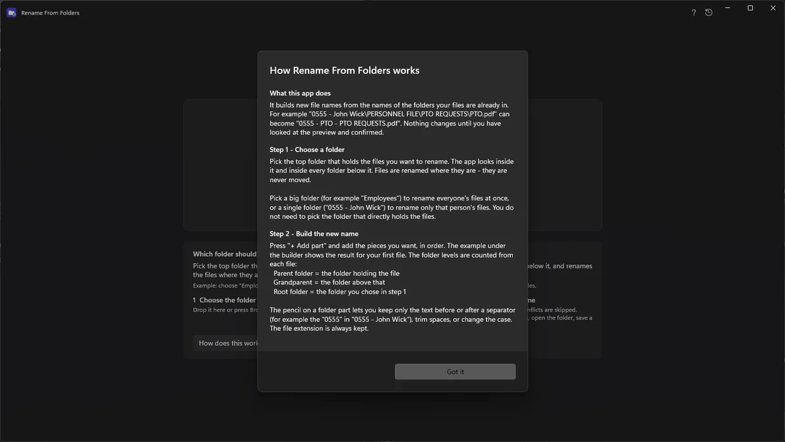
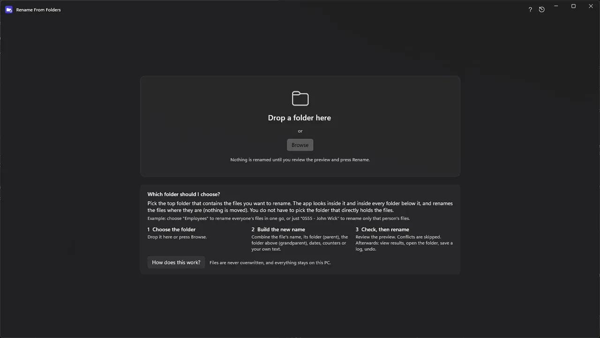
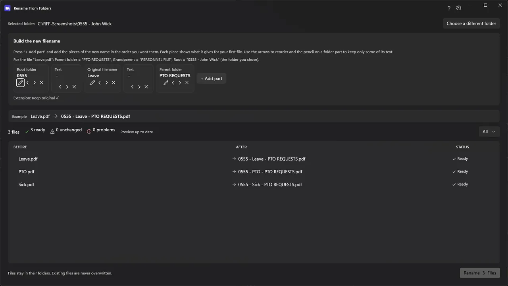
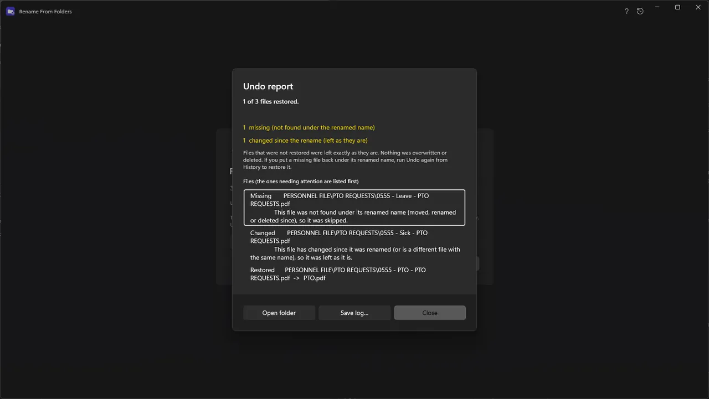
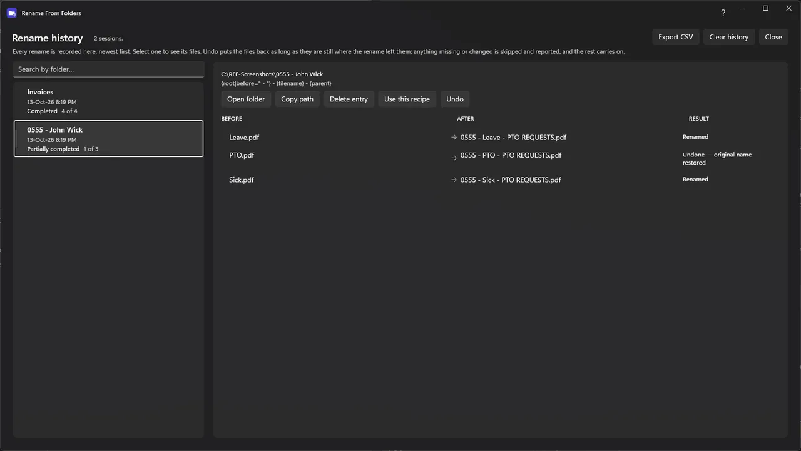

← Volver a todos los proyectos
App de Windows · En línea
RenameFromFolder
Antepone a cada archivo de un árbol de carpetas el nombre de su carpeta madre. Ves cada cambio antes de que ocurra, y luego puedes revertir todo el lote. Funciona en Windows 10 y 11.
Para quién es: Para quien organiza sus archivos en carpetas bien nombradas y quiere que los nombres de archivo coincidan.
Qué hace
- Antepone a cada archivo el nombre de su carpeta madre, incluidas las subcarpetas
- Muestra cada cambio previsto antes de aplicar nada
- Revierte un lote completo cuando lo necesites
- Funciona en Windows 10 y 11
Capturas de pantalla




